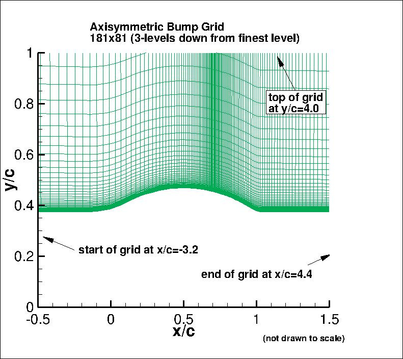

|
Langley Research CenterTurbulence Modeling Resource |
Return to: Axisymmetric Transonic Bump Case Intro Page
Return to: Turbulence Modeling Resource Home Page
Grids - Axisymmetric Transonic Bump Case
A series of 5 nested grids, nondimensionalized by chord,
are provided. All grid files have been gzipped.
Each coarser grid is exactly every-other-point
of the next finer grid, ranging from the finest 1441 x 641
to the coarsest 91 x 41 grid.
The following figure shows a portion of
the 181 x 81 grid (3 levels down from the finest grid). The grid
is not drawn to scale (the vertical direction has been expanded for clarity), and the
full extent of the grid is not shown.

Note: be sure to use double precision when reading the grids!
STRUCTURED VERSIONS OF
GRIDS
PLOT3D Files
The structured PLOT3D grids are given in two different ways, as 2-D grids (x-y plane) or as 3-D
axisymmetric grids (two planes rotated through 1 deg from each other; one plane rotated 1 deg
from the x-z plane).
You may use whichever is more convenient for your particular
application. If you get the 2-D grid version, then you must create an axisymmetric grid from
it on your own.
Format for the structured 2D grids is PLOT3D-type, formatted, MG, 2D (nbl=1) - note that you
must use double precision when reading! :
read(2,*) nbl
read(2,*) (idim(n),jdim(n),n=1,nbl)
do n=1,nbl
read(2,*) ((x(i,j,n),i=1,idim(n)),j=1,jdim(n)),
+ ((y(i,j,n),i=1,idim(n)),j=1,jdim(n))
enddo
Download the 2-D version of the grids in PLOT3D format here:
Format for the 2-rotated-plane structured 3D grid is PLOT3D-type, formatted, MG, 3D (nbl=1, and idim in this case is 2) - note that you must use double precision when reading! :
read(2,*) nbl
read(2,*) (idim(n),jdim(n),kdim(n),n=1,nbl)
do n=1,nbl
read(2,*) (((x(i,j,k,n),i=1,idim(n)),j=1,jdim(n)),k=1,kdim(n)),
+ (((y(i,j,k,n),i=1,idim(n)),j=1,jdim(n)),k=1,kdim(n)),
+ (((z(i,j,k,n),i=1,idim(n)),j=1,jdim(n)),k=1,kdim(n))
enddo
Download the 3-D version of the grids in PLOT3D format here:
If desired, example Neutral Map Files associated with 3-D version of the grids are given here (these files specify grid indices associated with each boundary condition - see The Neutral Map File):
UNSTRUCTURED VERSIONS OF GRIDS
AFLR3 Files
The unstructured versions of the same 3-D grids are all given as AFLR3 (UGRID) files. Note that the BCs given for these files are for guidance only, and may not reflect the appropriate BCs needed for your application.
Download the unstructured AFLR3 grids (gzipped) here:
All AFLR3 grids have the same mapbc file: bump_newaxi_all_website.mapbc.
Return to: Axisymmetric Transonic Bump Validation Intro Page
Return to: Turbulence Modeling Resource Home Page
Responsible NASA Official:
Ethan Vogel
Page Curator:
Clark Pederson
Last Updated: 03/11/2025